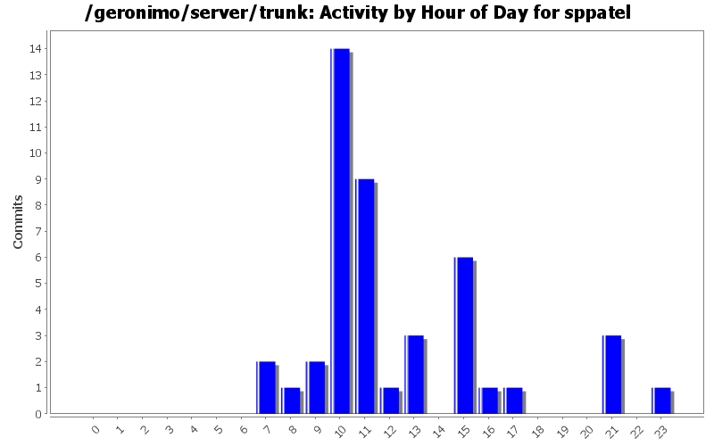
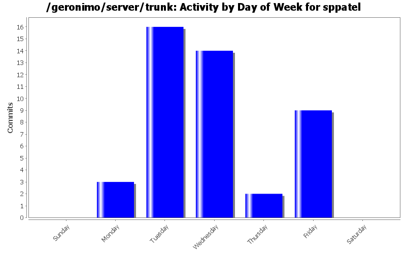
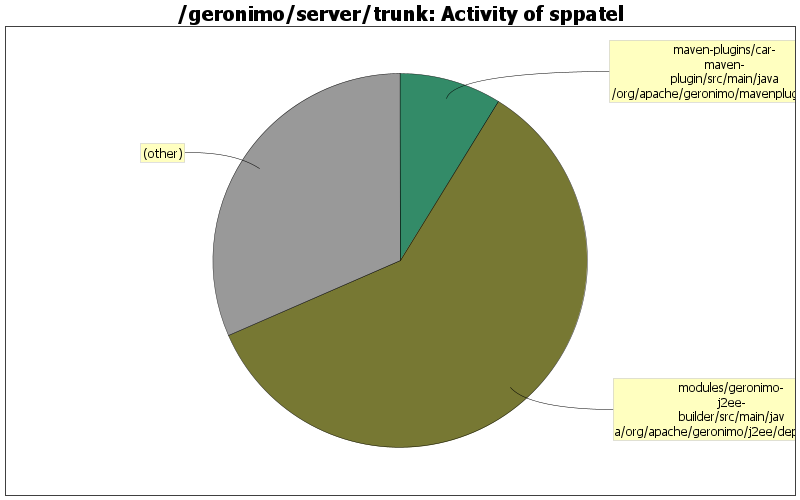

set missing tomcat standard context attributes for tomcat fallback application
2 lines of code changed in 1 file:
MEJB support
7 lines of code changed in 2 files:
revert back r527503.. jaxb back to 2.0.3 due to openejb runtime errors
4 lines of code changed in 1 file:
fix exclude for jsr173 after backleveling jaxb
2 lines of code changed in 1 file:
backlevel jaxb-impl and jaxb-xjc to 2.0 to match other jaxb jar levels
8 lines of code changed in 1 file:
upgrade level of woodstox to 3.2.1
1 lines of code changed in 1 file:
allow nestedjarfiles to contain unpacked modules
12 lines of code changed in 1 file:
jaxws workaround fails for inplace deployment in tomcat, check for web.xml in inPlace location before trying to create, also mkdirs to avoid exception in filewriter if WEB-INF dir does not exist
4 lines of code changed in 1 file:
temporarily comment out block as "id" is currently unused and causes an NPE if appclient contains no dd
2 lines of code changed in 1 file:
if no dd and manifest contains main-class then consider it an appclient
4 lines of code changed in 1 file:
tolerate no app client dd
16 lines of code changed in 1 file:
GERONIMO-2874 need to call getStringValue to get value of element
33 lines of code changed in 2 files:
actually only continue building module without web.xml if module name is *.war
10 lines of code changed in 2 files:
squash exception and continue processing webbuilder if no web.xml
26 lines of code changed in 2 files:
fix checking of jar entry as a "lib" entry and get the actual value of lib directory
21 lines of code changed in 1 file:
fix incorrect appclient schema url
1 lines of code changed in 1 file:
add geronimo-openejb to default env for refbuilders to provide visibility to ClientEjbReference
10 lines of code changed in 1 file:
typo in property name, missing "."
1 lines of code changed in 1 file:
fix specified group/artifact/version elements being ignored on standalone module deployments
4 lines of code changed in 1 file:
fix NPE.. continue search if no applclient or ejbjar
2 lines of code changed in 1 file:
(9 more)